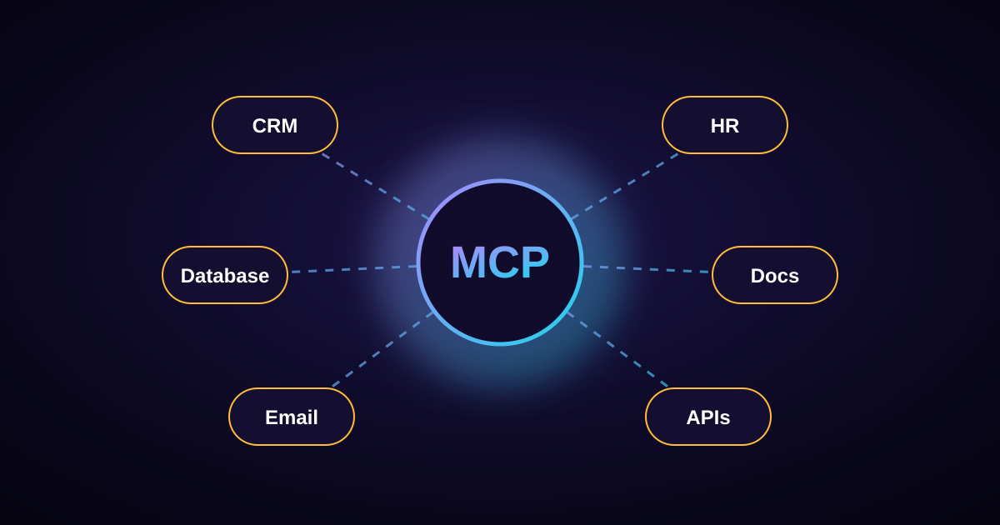
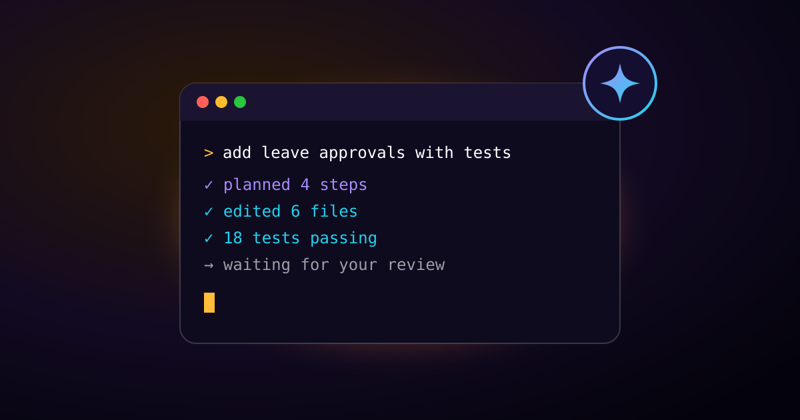

Notes on Laravel, AI & building real products
Practical write-ups from my work on CRM, HR and SaaS platforms.

Laravel AI SDK, Boost & MCP: The New AI Toolkit for Laravel Developers
Laravel now ships three first-party AI packages. What each one does, with code, and when to reach for which.

MCP in 2026: The Open Standard Connecting AI Agents to Business Software
Why the Model Context Protocol became the default way AI agents plug into real software, and what it means for CRM and HR products.

AI Coding Agents in 2026: From Autocomplete to Teammate
Agents now plan, edit and test whole features. Where the real bottleneck moved, and the habits that make them genuinely useful.